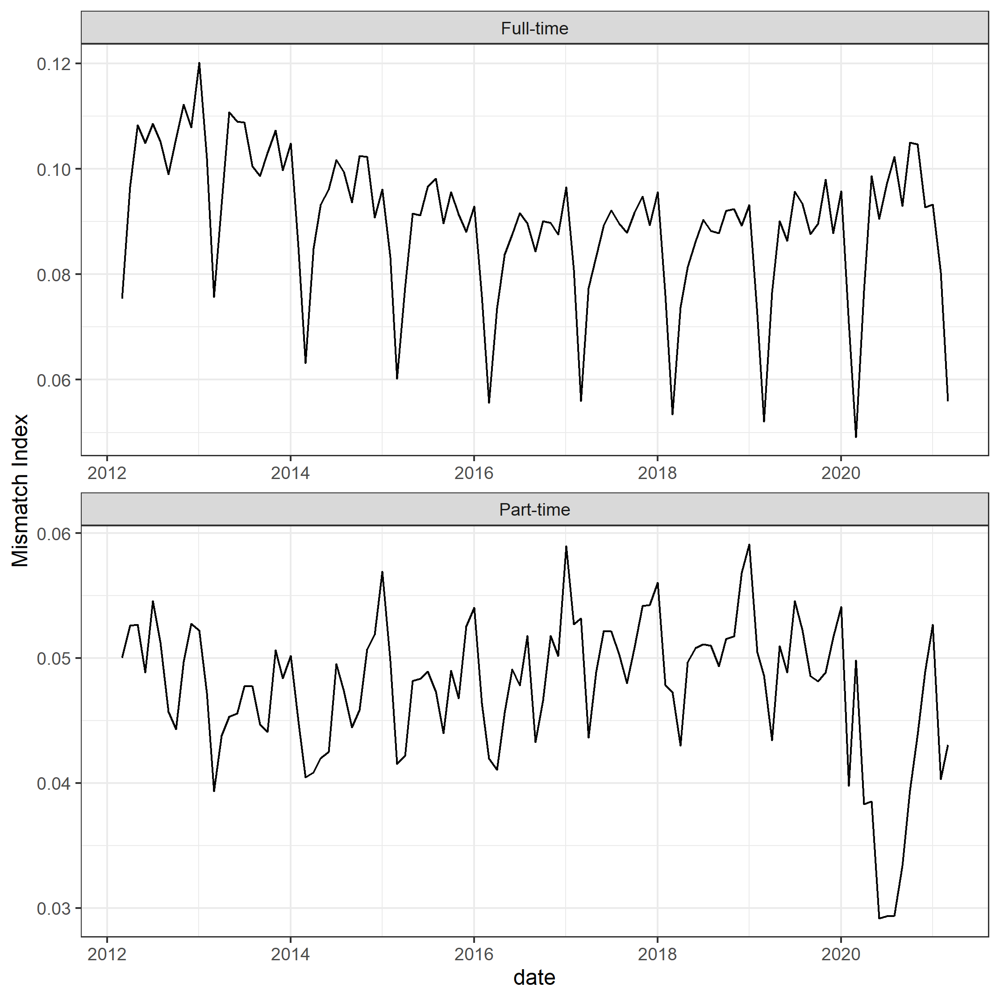

Chapter 5 ミスマッチ
5.1 方法
Apply the mismatch index proposed by Şahin et al. (2014).
The mismatch index, \(M_t\), is defined as
\[M_t = \frac{h_t^{*}-h_t}{h_t},\] where \(h_t\) and \(h_t^*\) are actual and counter-factual numbers of new employment, respectively.
The counter-factual numbers is a solution of planner problem. The planner problem is to maximize the number of new employment, given the making function \(\mu_{jt}(u_{jt},v_{jt})\), the number of vacancy \(v_{jt}\), and the total number of job seeker \(u_{t}\).
Formally,
\[h_t^*=\max_{u_{jt}} \sum_j h_{jt},\] subject to
\[h_{jt}=\mu_{jt}(u_{jt},v_{jt}),\ \ \ \ (matching\ function)\] and
\[\sum_{j}u_{jt}=u_t.\ \ \ \ (Resource\ constrint)\]
- The estimation process is follows
- Suppose a parametric specification on the matching function as \(\mu_{jt}(u_{jt},v_{jt})=A_{jt}u_{jt}^{1-\beta}v_{jt}^{\beta}\), where \(A_{jt}=exp(f_t,f_j,\epsilon_{jt})\), \(f_t\) and \(f_j\) are time and sector fixed-effects, respectively. The parametric assumption obtains the closed solution of the planner problem;
\[h_t^*=\max_{u_{jt}} \sum_j exp(f_t,f_j,\epsilon_{jt})\times v_{jt}^{\beta}\times (u_{jt}^*)^{1-\beta},\] where \[u_{jt}^*=\frac{A_{jt}^{1/\beta}v_{jt}}{\sum_{j'}A_{j't}^{1/\beta}v_{j't}}u_{t}.\ \ \ \ (optimal\ allocation)\]
- Estimate the log-transfer matching function
\[\log(h_{jt}/u_{jt})=f_{j}+f_{t}+\beta\times\log(v_{jt}/u_{jt})+\epsilon_{jt}.\]
- Calculate the mismatch index with estimated parameters in Step 2.
5.2 Aggregate mismatch
- Occupational mismatch by March, 2021.
